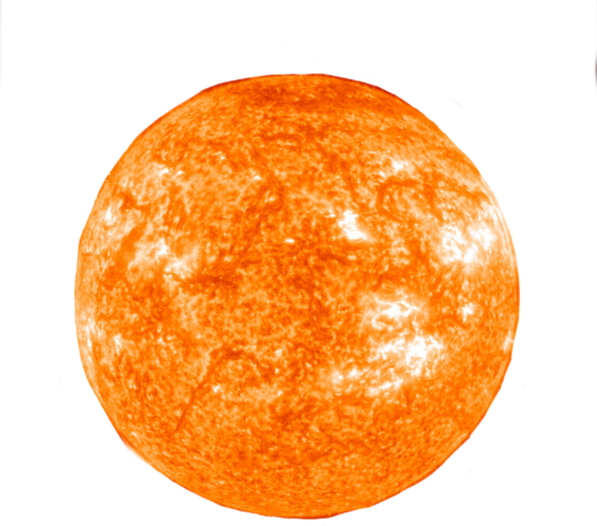

Sol

el Sol representa, en el plano psicológico, nuestro centro, nuestra verdadera forma de ser. Al igual que la estrella Sol, cuya luz nos enceguece de intentar solo mirarlo, representa la chispa divina dentro de nosotros, nuestro principio de vitalidad y el reconocimiento de que “¡estoy aquí y estoy vivo!”.
Es ese impulso que nos lleva a buscar convertirnos en lo que estamos destinados a ser, lo cual nos permite desarrollar nuestra individualidad.
En una carta natal el Sol es el que tiene la función de iluminar nuestra personalidad. Es la estrella central del sistema solar y brilla con luz propia; y es por ello que en nuestra carta astral representa nuestra singularidad y aquello que nos hace brillar de manera única y genuina.